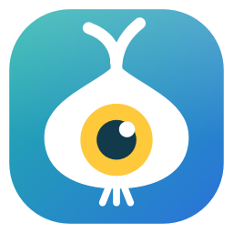
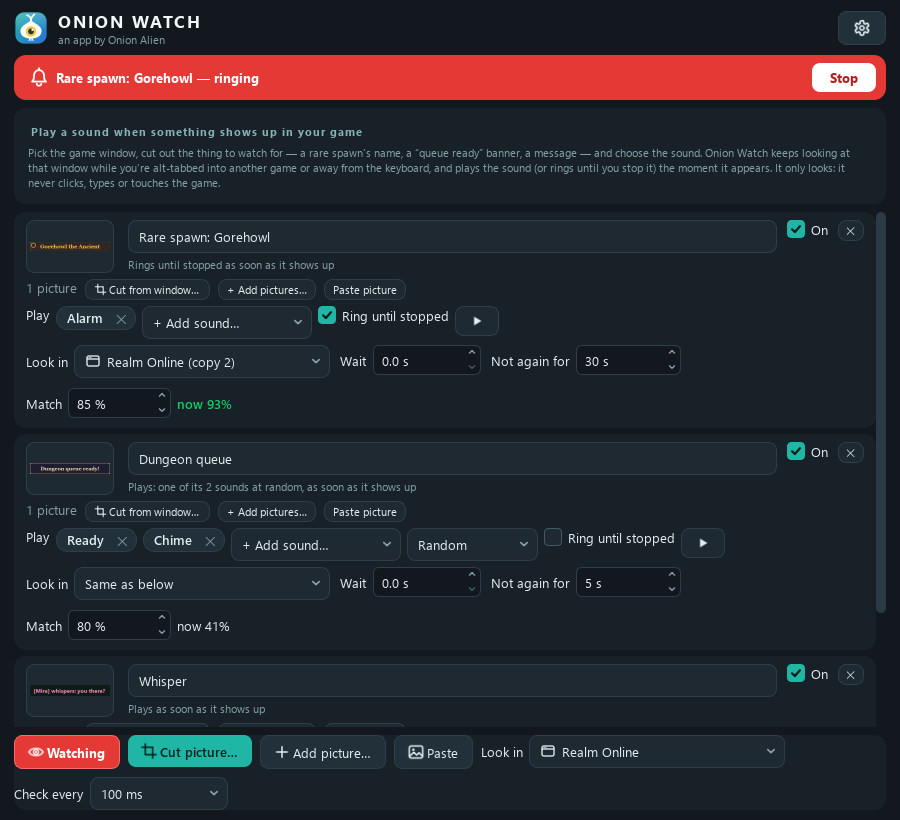
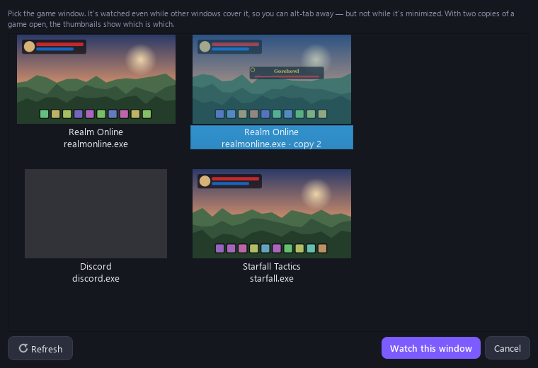
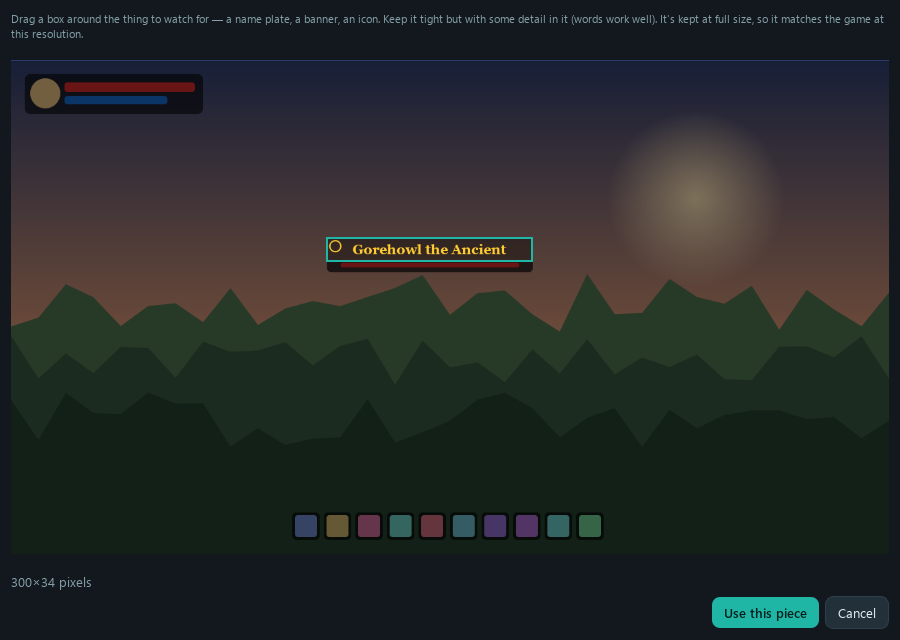
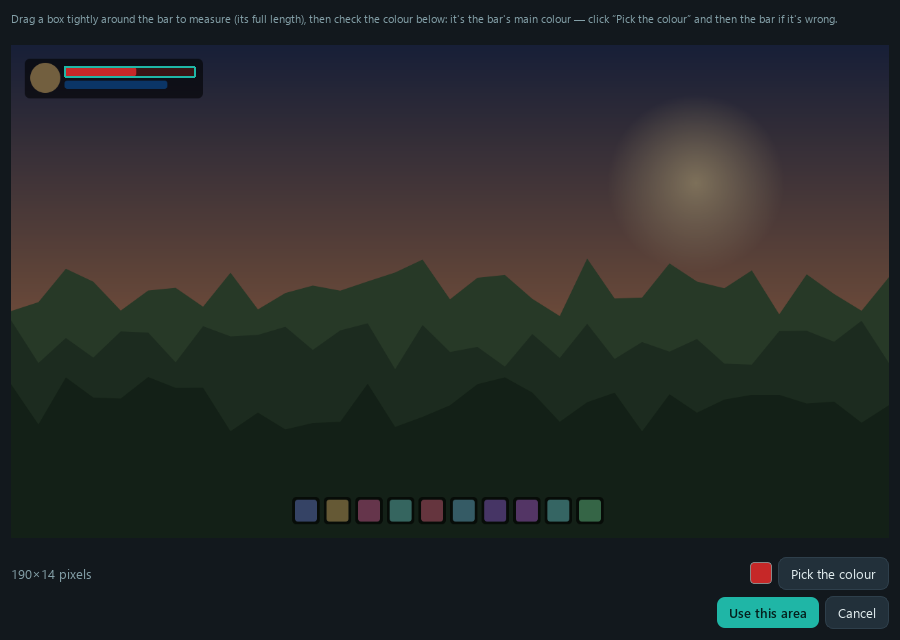
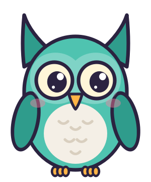

Plays a sound when your game needs you: a rare spawn, a queue pop, a whisper, YOU DIED. It keeps watching the game's window while you're alt-tabbed into something else.
⬇ Download for WindowsFree · Windows 10 and 11 · no account, no ads, no tracking, no internet needed
VirusTotal scan of 0.6.1 · 69 of 69 scanners clean

Pick the game's window and it's watched even while your browser, a video or another game covers it. (Not while it's minimized: Windows stops drawing those.)
A trigger can watch several windows and screens, or every copy of a game (also ones you start later), and the alert says which one it was. Two copies are told apart, so "copy 2" stays your second account.
Go off when the thing appears, when it disappears (a buff running out), when an area changes (a new chat line), or when nothing has moved for a while (stuck, idle, disconnected).
Point it at a bar and pick its colour: it goes off when the bar runs low (or fills up). Only look in part of a window to cut out false alarms.
Drag a box around the thing to watch for, right out of the game's window: a name plate, a banner, a chat line.
For the things you can't miss: an alarm that keeps going until the game moves, you alt-tab back to it, or you click Stop. Or a sound that plays once, each time it shows up. "What went off" shows each alert with a picture of the moment.
Built-in alerts (Chime, Ping, Ready, Bell, Alarm) or any sound file, on the speakers or headphones you pick.
It never presses keys, clicks, reads or changes a game's memory: it sees what you'd see, like OBS or a Discord screen share. Some games ban every third-party tool, so check your game's rules.



OnionWatch-Installer.exe and run it.Windows or your browser may warn you about the download. That's normal for a free app from a small developer: the installer isn't "code-signed", which costs hundreds a year. Click More info → Run anyway (or ⋯ → Keep in Edge / Chrome). The full source code is on GitHub if you'd like to check it.
Use Onion Board, the free soundboard? Onion Watch is also its Triggers tab: click Get Onion Watch there and your triggers play the board's sounds.
